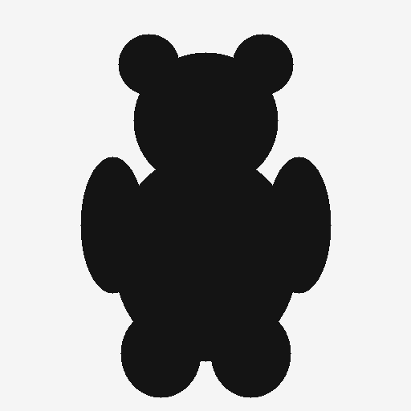
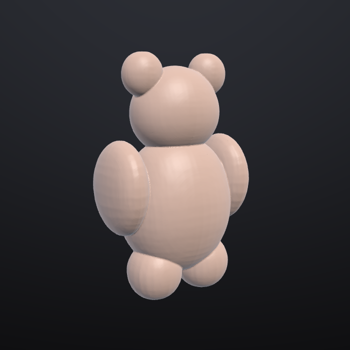

Sculpt the way you already do
Standard, Clay, Move, Inflate, Crease, Flatten, Pinch and Smooth, with symmetry, tablet pressure, ZBrush-style navigation, unlimited undo, subdivision and voxel remesh.
The free, open-source alternative to ZBrush
Digital sculpting for Linux, macOS and Windows: the brushes, symmetry and navigation ZBrush artists already know, with no subscription. It adds one-click game-ready LODs, Send to Unreal, Gaussian splats and OpenUSD, plus free built-in AI: turn a sketch or a sentence into a model you can sculpt. No account needed, or bring your own AI.
ZBrush-style sculpting for Linux, macOS and Windows. Free, open source, with game-ready export and free built-in AI.
A focused sculpting app that starts instantly, works offline and fits straight into game and animation pipelines.
Standard, Clay, Move, Inflate, Crease, Flatten, Pinch and Smooth, with symmetry, tablet pressure, ZBrush-style navigation, unlimited undo, subdivision and voxel remesh.
"Dry cracked mud." "Overlapping dragon scales." An AI turns words into a brush recipe you can tweak with sliders. Works with Claude or any OpenAI-compatible endpoint, including local Ollama.
Reconstruct a full, sculptable model from a sketch, a piece of concept art or a description, for free through Hunyuan3D, TRELLIS.2 and Stable Fast 3D on Hugging Face, or with fal.ai or Meshy.
Sculpt layers become blend shapes and morph targets. Make a whole LOD chain in one click. Blend shapes survive on every level.
One click imports or updates your asset in a running Unreal Editor, on this computer or another one on your network. Static meshes come with LODs, skeletal meshes with morph targets.
Load phone captures as a sculpting reference, turn them into watertight meshes, or turn your sculpt into splats. Supports PLY, .splat, glTF KHR_gaussian_splatting and OpenUSD.
FBX, glTF/GLB, OpenUSD (USDA/USDZ), OBJ and PLY. Exports are checked with the Khronos glTF validator and Pixar's OpenUSD tools.
sculptforge-cli runs any operation headless for build farms. Its built-in MCP server
lets Claude Code, Claude Desktop or any MCP client sculpt, convert and export.
Every clip is a real, unedited recording of the app, made with its built-in demo recorder. Waits for AI models are sped up and labelled on screen.
Type "dry cracked mud", and a small open model running on the same machine designs the brush. Then ask for "deeper cracks, sharper edges". Nothing leaves your computer.


A quick drawing became a full 3D model, with separate ears, arms and legs, a back and real depth. It was made with the free Hunyuan3D 2.1 model, then voxel-remeshed into one clean surface ready to sculpt. You can also type a description instead of using an image.
Sculpt an expression on its own layer and play it back. Generate a LOD chain and inspect each level, then send a static mesh with LODs, or a skeletal mesh with morph targets, to Unreal Engine.
Turn a sculpt into Gaussian splats for web viewers and engines, and turn splat captures into watertight meshes in under a second.
AI works out of the box at no cost: free models for image and text to 3D, and local models for brush design. Every AI feature is optional and talks directly to the service you pick. SculptForge has no servers, no account and no telemetry.
Each model has its own licence. For example, Tencent's Hunyuan3D isn't licensed for use in the EU, UK or South Korea. See the AI services and privacy guide.
| SculptForge | ZBrush | Blender | Nomad | |
|---|---|---|---|---|
| Price | Free | Subscription | Free | Paid |
| Built for sculpting | Yes | Yes | General 3D suite | Yes (mobile first) |
| Open source | GPL | No | GPL | No |
| Native Linux | Yes | No | Yes | No |
| Send to Unreal | Built in | Plugin | Add-on | No |
| Image / text to 3D | Built in | No | Add-ons | No |
| Gaussian splats | Built in | No | Add-ons | No |
| AI agent control (MCP) | Built in | No | Add-ons | No |
| VFX Reference Platform builds | CY2026/27 | No | Yes | No |
SculptForge is young. It doesn't yet have retopology, UVs or texture painting. See the roadmap.
Animation, VFX and game studios run their own pipelines. SculptForge fits into them instead of asking them to fit around it.
import sculptforge) with NumPy mesh access, plus a
Rez package for deployment.SculptForge is GPL-3.0. Fork it and wire it into your asset system. The GPL only asks you to share source if you distribute a modified version outside your organisation, so in-house changes can stay in-house.
import sculptforge as sf
doc = sf.Document()
sf.run(doc, "open", path="troll_base.fbx")
sf.run(doc, "remesh", resolution=320)
sf.run(doc, "export_usd", path="troll.usda")
verts = doc.vertices # NumPy (N, 3)Version 0.1.0. All builds come from the latest GitHub release, with SHA-256 checksums.
yay -S sculptforgeThe builds aren't code-signed yet. On macOS, right-click the app and choose Open the first time. On Windows, if SmartScreen appears, choose More info → Run anyway. You can also build from source.
Yes. SculptForge is free under the GPL-3.0, and you own everything you sculpt with it. The GPL covers the program's source code, not your models. If you use an AI model to generate a starting point, that model's licence also applies (see the AI services guide).
No. Sculpting, layers, LODs, remeshing, file formats and Send to Unreal all work offline with no AI at all. The AI tools are extras you can switch to a local model or simply ignore.
It targets Unreal Engine 5. It uses Unreal's built-in Python remote execution, so you only enable the Python plugin and tick "Enable Remote Execution"; there's nothing to install in your project. You can always export an Unreal-ready FBX instead.
For many sculpting and game-asset jobs, yes. Blocking out, sculpting forms and detail, blend shapes, LODs and getting assets into Unreal, glTF or USD all work today, with familiar brushes and controls. Masking, polygroups and visibility, polypaint, MatCaps, project files and GoZ exchange with ZBrush are in the development version and will ship in the next release. SculptForge doesn't yet have multiresolution subdivision levels, dynamic topology, ZRemesher-class retopology or UV unwrapping, and it can't open ZBrush's .ZTL files (use GoZ, or export OBJ or FBX from ZBrush). It's an independent project, not affiliated with Maxon.
Try it, report bugs, share brushes, and send pull requests. See CONTRIBUTING.md.